%% E-R 图（物理模型 / 表结构）
%% 用途：数据库设计说明书 04 图4-2，12 张表的主键、关键字段与基数关系。
%% 说明：字段全集与索引见 04 文档表格与 schema.sql，本图只保留主键与 2~3 个关键字段。
%% 基数读法：||--o{ 读作「左边 1 条对右边 0..N 条」，||--o| 为一对零或一。
erDiagram
SYS_USER ||--o| STUDENT_PROFILE : "绑定学籍"
STUDENT_WHITELIST ||--o| STUDENT_PROFILE : "白名单校验"
ORGANIZATION ||--o{ ORG_MEMBER : "包含成员"
SYS_USER ||--o{ ORG_MEMBER : "加入组织"
ORGANIZATION ||--o{ ACTIVITY : "主办活动"
ACTIVITY_CATEGORY ||--o{ ACTIVITY : "分类归属"
SYS_USER ||--o{ ACTIVITY : "创建活动"
ACTIVITY ||--o{ ACTIVITY_SIGNUP : "收到报名"
SYS_USER ||--o{ ACTIVITY_SIGNUP : "提交报名"
ACTIVITY_SIGNUP ||--o| ACTIVITY_CHECKIN : "签到记录"
ACTIVITY ||--o{ ACTIVITY_CHECKIN : "签到归属"
ACTIVITY ||--o{ ACTIVITY_FAVORITE : "被收藏"
SYS_USER ||--o{ ACTIVITY_FAVORITE : "收藏活动"
SYS_USER ||--o{ SYS_NOTICE : "接收消息"
SYS_USER ||--o{ AUDIT_RECORD : "操作留痕"
SYS_USER {
bigint id PK
varchar open_id UK
varchar role
tinyint status
}
STUDENT_PROFILE {
bigint user_id PK
varchar student_no UK
varchar real_name
varchar college
}
STUDENT_WHITELIST {
bigint id PK
varchar student_no UK
tinyint used_flag
}
ORGANIZATION {
bigint id PK
varchar name
tinyint type
}
ORG_MEMBER {
bigint id PK
bigint org_id FK
bigint user_id FK
}
ACTIVITY_CATEGORY {
bigint id PK
varchar code UK
varchar name
}
ACTIVITY {
bigint id PK
varchar title
bigint org_id FK
int capacity
int signed_count
tinyint status
}
ACTIVITY_SIGNUP {
bigint id PK
bigint activity_id FK
bigint user_id FK
tinyint status
int waitlist_seq
}
ACTIVITY_CHECKIN {
bigint id PK
bigint signup_id FK
tinyint checkin_type
datetime checkin_time
}
ACTIVITY_FAVORITE {
bigint id PK
bigint activity_id FK
bigint user_id FK
}
SYS_NOTICE {
bigint id PK
bigint user_id FK
varchar type
tinyint read_flag
}
AUDIT_RECORD {
bigint id PK
bigint biz_id
varchar action
bigint operator_id FK
}
%% 状态图 / 状态机图（State Machine Diagram）
%% 用途：详细设计说明书 06 图6-2，activity.status 的 7 态迁移与触发条件。
%% 要点：唯一的初态，三个终态；箭头文字为触发条件。
stateDiagram-v2
direction TB
[*] --> 草稿: 新建活动
草稿 --> 待审核: 提交审核
待审核 --> 已发布: 审核通过
待审核 --> 已驳回: 驳回
已驳回 --> 待审核: 修改后重提
已发布 --> 进行中: 到开始时间
进行中 --> 已结束: 到结束时间
已发布 --> 已取消: 取消
进行中 --> 已取消: 取消
已发布 --> 待审核: 编辑后重提
进行中 --> 待审核: 编辑后重提
已结束 --> [*]
已取消 --> [*]
%% 状态图 / 状态机图（State Machine Diagram）
%% 用途：详细设计说明书 06 图6-3，activity_signup.status 的 7 态迁移与触发条件。
%% 要点：同一初态可分流到待审核、报名成功、候补中三种结果。
stateDiagram-v2
direction TB
[*] --> 待审核: 报名需审核
[*] --> 报名成功: 名额充足
[*] --> 候补中: 满员且可候补
待审核 --> 报名成功: 审核通过并占位
待审核 --> 审核未通过: 驳回
待审核 --> 已取消: 学生取消
报名成功 --> 已签到: 扫码或补签
报名成功 --> 已取消: 取消截止前取消
报名成功 --> 未到场: 结束未签到
候补中 --> 报名成功: 队首转正
候补中 --> 已取消: 学生取消
已取消 --> 待审核: 重新报名
已取消 --> 报名成功: 重新报名
审核未通过 --> 待审核: 重新报名
审核未通过 --> 报名成功: 重新报名
已签到 --> [*]
未到场 --> [*]
已取消 --> [*]
审核未通过 --> [*]
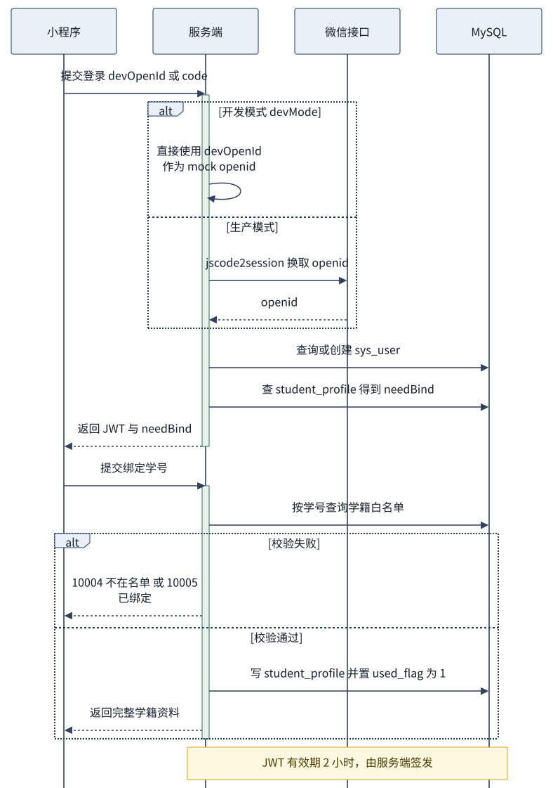
%% 时序图 / 顺序图（Sequence Diagram）
%% 用途：详细设计说明书 06 图6-1，小程序登录、建号、绑定学号与 JWT 签发。
%% 要点：参与者为小程序、服务端、微信接口、MySQL 四者，JWT 由服务端签发。
sequenceDiagram
participant U as 小程序
participant S as 服务端
participant W as 微信接口
participant D as MySQL
U->>S: 提交登录 devOpenId 或 code
activate S
alt 开发模式 devMode
S->>S: 直接使用 devOpenId 作为 mock openid
else 生产模式
S->>W: jscode2session 换取 openid
W-->>S: openid
end
S->>D: 查询或创建 sys_user
S->>D: 查 student_profile 得到 needBind
S-->>U: 返回 JWT 与 needBind
deactivate S
U->>S: 提交绑定学号
activate S
S->>D: 按学号查询学籍白名单
alt 校验失败
S-->>U: 10004 不在名单 或 10005 已绑定
else 校验通过
S->>D: 写 student_profile 并置 used_flag 为 1
S-->>U: 返回完整学籍资料
end
deactivate S
Note over S,D: JWT 有效期 2 小时，由服务端签发
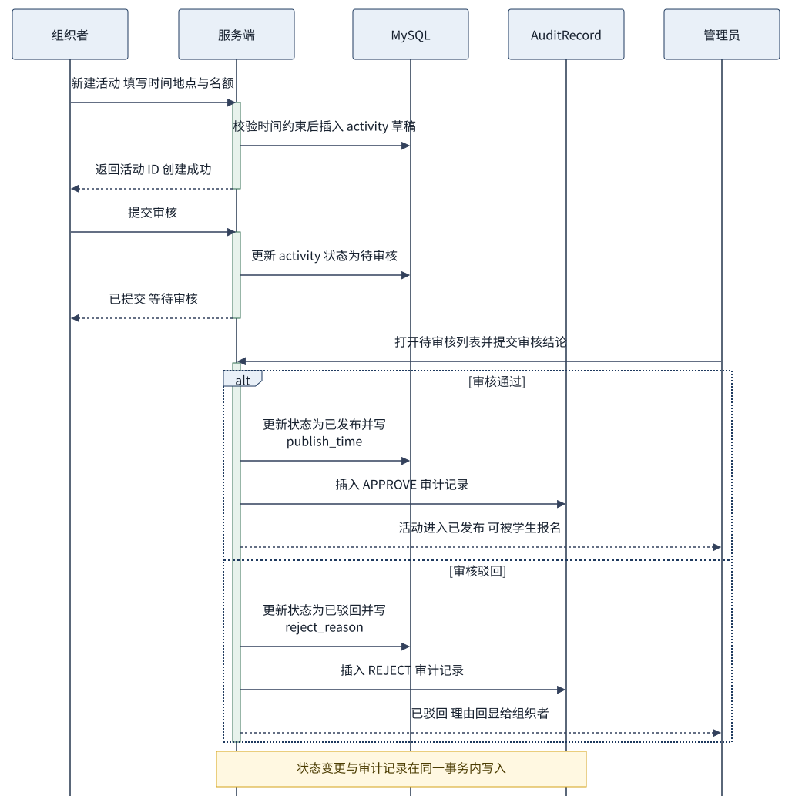
%% 时序图 / 顺序图（Sequence Diagram）
%% 用途：概要设计说明书 03 图3-3，组织者建活动、提交审核、团委审核发布与审计留痕。
%% 要点：参与者为组织者、服务端、MySQL、AuditRecord、管理员。
sequenceDiagram
participant O as 组织者
participant S as 服务端
participant D as MySQL
participant A as AuditRecord
participant M as 管理员
O->>S: 新建活动 填写时间地点与名额
activate S
S->>D: 校验时间约束后插入 activity 草稿
S-->>O: 返回活动 ID 创建成功
deactivate S
O->>S: 提交审核
activate S
S->>D: 更新 activity 状态为待审核
S-->>O: 已提交 等待审核
deactivate S
M->>S: 打开待审核列表并提交审核结论
activate S
alt 审核通过
S->>D: 更新状态为已发布并写 publish_time
S->>A: 插入 APPROVE 审计记录
S-->>M: 活动进入已发布 可被学生报名
else 审核驳回
S->>D: 更新状态为已驳回并写 reject_reason
S->>A: 插入 REJECT 审计记录
S-->>M: 已驳回 理由回显给组织者
end
deactivate S
Note over S,A: 状态变更与审计记录在同一事务内写入
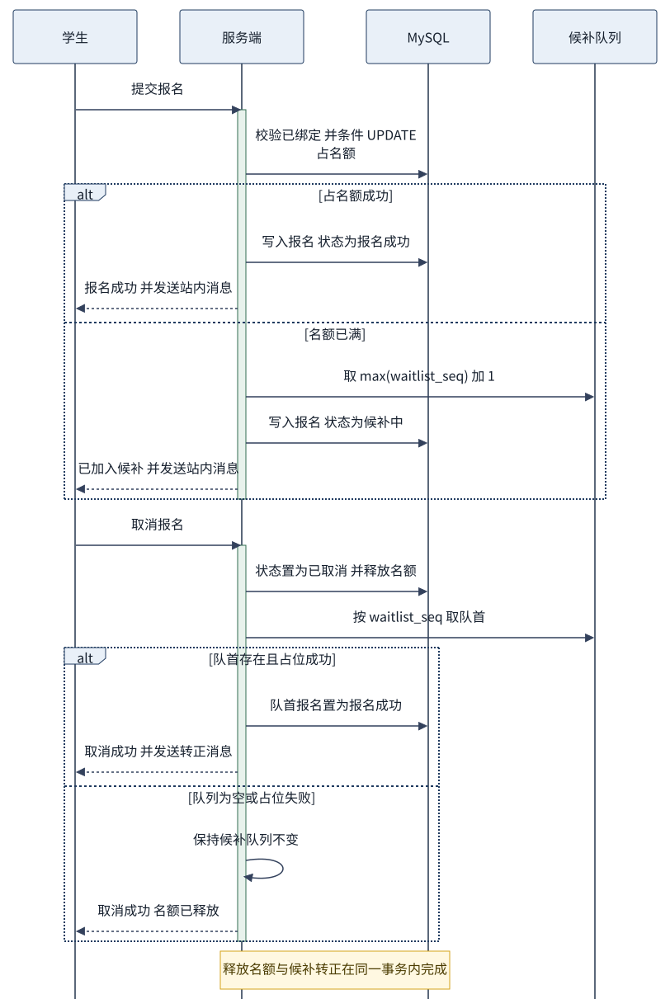
%% 时序图 / 顺序图（Sequence Diagram）
%% 用途：概要设计说明书 03 图3-4，报名占名额、满员候补、取消释放与队首转正。
%% 要点：名额占用是一条条件 UPDATE，影响行数为 0 才进入候补。
sequenceDiagram
participant U as 学生
participant S as 服务端
participant D as MySQL
participant Q as 候补队列
U->>S: 提交报名
activate S
S->>D: 校验已绑定 并条件 UPDATE 占名额
alt 占名额成功
S->>D: 写入报名 状态为报名成功
S-->>U: 报名成功 并发送站内消息
else 名额已满
S->>Q: 取 max(waitlist_seq) 加 1
S->>D: 写入报名 状态为候补中
S-->>U: 已加入候补 并发送站内消息
end
deactivate S
U->>S: 取消报名
activate S
S->>D: 状态置为已取消 并释放名额
S->>Q: 按 waitlist_seq 取队首
alt 队首存在且占位成功
S->>D: 队首报名置为报名成功
S-->>U: 取消成功 并发送转正消息
else 队列为空或占位失败
S->>S: 保持候补队列不变
S-->>U: 取消成功 名额已释放
end
deactivate S
Note over S,D: 释放名额与候补转正在同一事务内完成
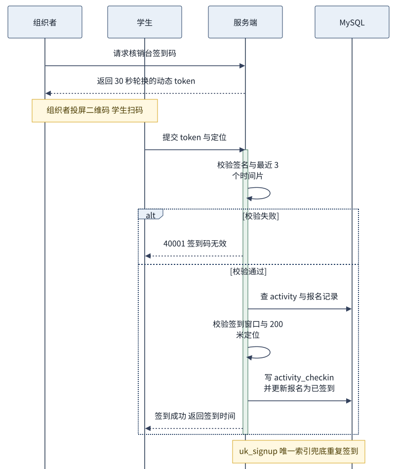
%% 时序图 / 顺序图（Sequence Diagram）
%% 用途：详细设计说明书 06 图6-4，组织者出动态码、学生扫码、服务端校验并写签到。
%% 要点：参与者为组织者、学生、服务端、MySQL；签到码不落库，接受最近 3 个时间片。
sequenceDiagram
participant O as 组织者
participant U as 学生
participant S as 服务端
participant D as MySQL
O->>S: 请求核销台签到码
S-->>O: 返回 30 秒轮换的动态 token
Note over O,U: 组织者投屏二维码 学生扫码
U->>S: 提交 token 与定位
activate S
S->>S: 校验签名与最近 3 个时间片
alt 校验失败
S-->>U: 40001 签到码无效
else 校验通过
S->>D: 查 activity 与报名记录
S->>S: 校验签到窗口与 200 米定位
S->>D: 写 activity_checkin 并更新报名为已签到
S-->>U: 签到成功 返回签到时间
end
deactivate S
Note over S,D: uk_signup 唯一索引兜底重复签到
%% 活动图（Activity Diagram，带泳道）
%% 用途：需求规格说明书 02 图2-5，学生、系统、组织者三方在报名业务中的职责交接。
%% 说明：Mermaid 无 activityDiagram，用 flowchart + subgraph 表达泳道；
%% 实心圆为开始，双圆为结束，菱形为判断，出边均写条件。
flowchart TD
S(( )):::sn
subgraph L1["学生"]
A1[提交报名]
A2[绑定学号]
end
subgraph L2["系统"]
B1{已绑定且在报名窗口?}
B2{是否已报名?}
B3{报名需审核?}
B4{名额充足?}
B6[写入报名成功]
B7[写入候补队列]
B8[写入待审核]
end
subgraph L3["组织者"]
C1[审核报名]
end
E((( ))):::en
S --> A1
A1 --> B1
B1 -- 未绑定 返回 10003 --> A2
B1 -- 不在报名窗口 返回 20005 --> E
A2 -- 绑定成功 --> A1
B1 -- 通过 --> B2
B2 -- 已报名 返回 30002 --> E
B2 -- 未报名 --> B3
B3 -- 需审核 --> B8
B8 --> C1
C1 -- 审核通过且占名额成功 --> B6
C1 -- 驳回或名额不足 --> E
B3 -- 无需审核 --> B4
B4 -- 名额充足 --> B6
B4 -- 名额已满且可候补 --> B7
B4 -- 满员且未开候补 返回 30001 --> E
B6 --> E
B7 --> E
classDef sn fill:#0F172A,stroke:#0F172A
classDef en fill:#FFFFFF,stroke:#0F172A,stroke-width:2.6px
%% 流程图（Flowchart）
%% 用途：详细设计说明书 06 图6-5，取消报名后候补转正的处理流程。
%% 要点：取消、释放、取队首、占位、转正五步；每个失败分支都显式结束。
flowchart TD
A([开始]) --> B[学生取消报名 状态置为已取消]
B --> C{原状态是否占用名额?}
C -- 否 待审核或候补中 --> Z([结束])
C -- 是 报名成功或已签到 --> D[releaseSeat 释放名额]
D --> E[按 waitlist_seq 升序查询队首候补]
E --> F{存在候补记录?}
F -- 否 队列为空 --> Z
F -- 是 --> G["条件 UPDATE 占位 capacity 为 0 或 signed_count 小于 capacity"]
G --> H{影响行数等于 1?}
H -- 否 名额再次被抢占 --> Z
H -- 是 --> I[候补记录状态置为报名成功]
I --> J[NoticeService 发送候补转正消息]
J --> Z
%% 流程图（Flowchart）
%% 用途：详细设计说明书 06 图6-6，扫码签到的校验顺序与错误码分流。
%% 要点：校验顺序与 BR-10 一致；可合并的检查已并节点，失败分支在出边写错误码。
flowchart TD
A([开始]) --> B[/接收签到 token 与定位/]
B --> C{签到码有效?}
C -- 否 40001 签到码无效 --> Z([结束])
C -- 是 --> D{活动可签到?}
D -- 否 20001 不存在 或 40004 不在时间窗与仅手动活动 --> Z
D -- 是 --> E{已报名且未签到?}
E -- 否 40002 未报名 或 40003 已签到 --> Z
E -- 是 --> F{定位距离不超过 200 米?}
F -- 否 40005 超出签到范围 --> Z
F -- 是 --> G[写签到记录并更新报名为已签到]
G --> H([返回签到成功与签到时间])
%% 类图（Class Diagram）
%% 用途：详细设计说明书 06 图6-7，后端 Controller → Service → Mapper → Entity 四层依赖。
%% 说明：只保留 8 个关键类，按层分包（namespace）表达分层；每类方法不超过 3 个。
classDiagram
direction TB
namespace Controller {
class AppSignupController {
+signup(activityId, req) SignupVO
+mine() Page
+cancel(signupId) void
}
class OrgController {
+create(req) Long
+submit(id) void
+checkinQr(id) CheckinQrVO
}
class AdminActivityController {
+auditList() Page
+audit(id, req) void
+offline(id, reason) void
}
}
namespace Service {
class ActivityService {
+create(user, req) Long
+submit(user, id) void
+audit(operator, id, pass, reason) void
}
class SignupService {
+signup(user, activityId, req) SignupVO
+cancel(user, signupId) void
+promoteWaitlist(activityId) void
}
}
namespace Mapper {
class ActivitySignupMapper
}
namespace Entity {
class Activity {
-Long id
-String title
-Integer capacity
-Integer status
}
class ActivitySignup {
-Long id
-Long activityId
-Long userId
-Integer status
}
}
AppSignupController ..> SignupService : 调用
OrgController ..> ActivityService : 调用
OrgController ..> SignupService : 调用
AdminActivityController ..> ActivityService : 调用
SignupService ..> ActivitySignupMapper : 依赖
ActivitySignupMapper ..> ActivitySignup : 映射
ActivitySignup "0..*" --> "1" Activity : 归属
%% 流程图（Flowchart）
%% 用途：用户操作手册 09 图9-1，小程序 13 页与管理后台 6 视图的导航关系。
%% 说明：用 subgraph 分区表达两个端，箭头表示用户可达的跳转。
flowchart LR
subgraph APP["小程序 13 页"]
P1[首页]
P2[全部活动]
P3[活动详情]
P4[填写报名]
P5[消息]
P6[我的]
P7[我的报名]
P8[绑定学号]
P9[扫码签到]
P10[组织者工作台]
P11[发布活动]
P12[报名名单]
P13[签到核销]
end
subgraph ADMIN["管理后台 6 视图"]
M1[登录]
M2[工作台]
M3[活动审核]
M4[活动管理]
M5[用户管理]
M6[操作日志]
end
P1 --> P2
P2 --> P3
P3 --> P4
P1 --> P5
P1 --> P6
P6 --> P7
P7 --> P9
P6 --> P8
P6 --> P10
P10 --> P11
P10 --> P12
P10 --> P13
P4 --> P7
M1 --> M2
M2 --> M3
M2 --> M4
M2 --> M5
M2 --> M6
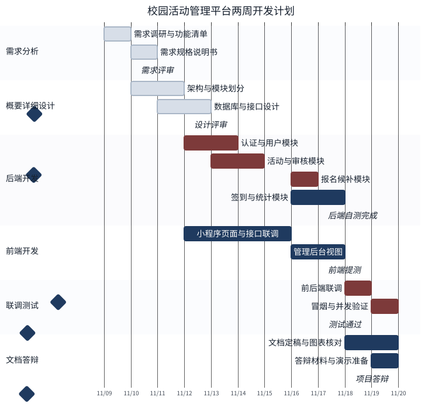
%% 甘特图（Gantt Chart）
%% 用途：项目管理与进度计划 10 图10-1，两周迭代与里程碑。
%% 要点：工期按 2026-11-09 至 2026-11-20（10 个工作日）；11-14/15 为周末，11-21/22 为机动缓冲。
gantt
title 校园活动管理平台两周开发计划
dateFormat YYYY-MM-DD
axisFormat %m/%d
tickInterval 2days
todayMarker off
section 需求分析
需求调研与功能清单 :done, a1, 2026-11-09, 1d
需求规格说明书 :done, a2, 2026-11-10, 1d
需求评审 :milestone, m1, 2026-11-10, 0d
section 概要详细设计
架构与模块划分 :done, b1, 2026-11-10, 2d
数据库与接口设计 :done, b2, 2026-11-11, 2d
设计评审 :milestone, m2, 2026-11-12, 0d
section 后端开发
认证与用户模块 :crit, c1, 2026-11-12, 2d
活动与审核模块 :crit, c2, 2026-11-13, 2d
报名候补模块 :crit, c3, 2026-11-16, 1d
签到与统计模块 :c4, 2026-11-16, 2d
后端自测完成 :milestone, m3, 2026-11-17, 0d
section 前端开发
小程序页面与接口联调 :d1, 2026-11-12, 4d
管理后台视图 :d2, 2026-11-16, 2d
前端提测 :milestone, m4, 2026-11-17, 0d
section 联调测试
前后端联调 :crit, e1, 2026-11-18, 1d
冒烟与并发验证 :crit, e2, 2026-11-19, 1d
测试通过 :milestone, m5, 2026-11-19, 0d
section 文档答辩
文档定稿与图表核对 :f1, 2026-11-18, 2d
答辩材料与演示准备 :f2, 2026-11-19, 1d
项目答辩 :milestone, m6, 2026-11-20, 0d
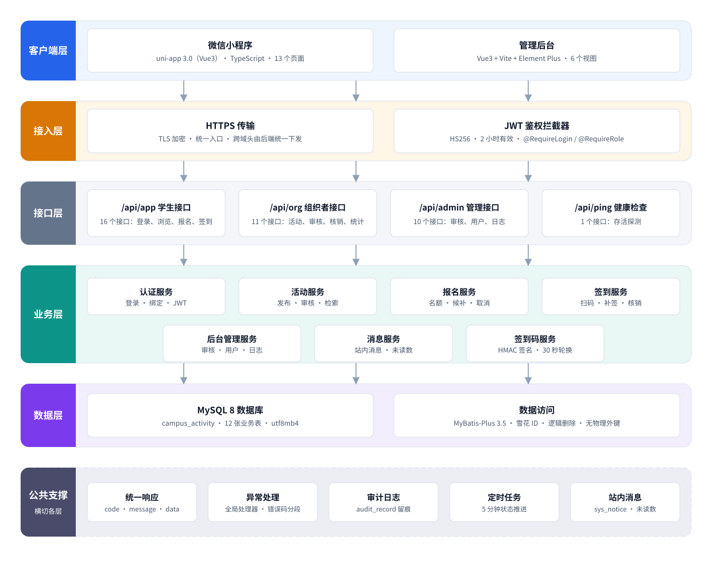
<svg xmlns="http://www.w3.org/2000/svg" width="1240" height="980" viewBox="0 0 1240 980" font-family="'PingFang SC','Hiragino Sans GB','Microsoft YaHei','Noto Sans CJK SC',sans-serif">
<defs>
<marker id="ar" viewBox="0 0 10 10" refX="9" refY="5" markerWidth="7.5"
markerHeight="7.5" orient="auto-start-reverse">
<path d="M0,0 L10,5 L0,10 Z" fill="#8FA0B5"/>
</marker>
<marker id="ar-open" viewBox="0 0 12 12" refX="11" refY="6" markerWidth="9"
markerHeight="9" orient="auto-start-reverse">
<path d="M1,1 L11,6 L1,11" fill="none" stroke="#8FA0B5" stroke-width="1.6"/>
</marker>
<marker id="ar-ink" viewBox="0 0 10 10" refX="9" refY="5" markerWidth="7.5"
markerHeight="7.5" orient="auto-start-reverse">
<path d="M0,0 L10,5 L0,10 Z" fill="#475569"/>
</marker>
</defs>
<rect x="36" y="36" width="1168" height="104" rx="14" ry="14" fill="#EFF5FE" stroke="#E3E8EF" stroke-width="1.4"/>
<defs><clipPath id="c-cli"><rect x="36" y="36" width="1168" height="104" rx="14" ry="14"/></clipPath></defs>
<g clip-path="url(#c-cli)"><rect x="36" y="36" width="96" height="104" fill="#2563EB"/></g>
<text x="84" y="94.1" font-size="17" fill="#FFFFFF" text-anchor="middle" font-weight="600">客户端层</text>
<rect x="152" y="50" width="498" height="76" rx="8" ry="8" fill="#FFFFFF" stroke="#E3E8EF" stroke-width="1.6"/>
<text x="401.0" y="84.5" font-size="15.5" fill="#0F172A" text-anchor="middle" font-weight="600">微信小程序</text>
<text x="401.0" y="106.0" font-size="12" fill="#475569" text-anchor="middle" font-weight="400">uni-app 3.0（Vue3）· TypeScript · 13 个页面</text>
<rect x="686" y="50" width="498" height="76" rx="8" ry="8" fill="#FFFFFF" stroke="#E3E8EF" stroke-width="1.6"/>
<text x="935.0" y="84.5" font-size="15.5" fill="#0F172A" text-anchor="middle" font-weight="600">管理后台</text>
<text x="935.0" y="106.0" font-size="12" fill="#475569" text-anchor="middle" font-weight="400">Vue3 + Vite + Element Plus · 6 个视图</text>
<rect x="36" y="176" width="1168" height="104" rx="14" ry="14" fill="#FEF6E7" stroke="#E3E8EF" stroke-width="1.4"/>
<defs><clipPath id="c-gate"><rect x="36" y="176" width="1168" height="104" rx="14" ry="14"/></clipPath></defs>
<g clip-path="url(#c-gate)"><rect x="36" y="176" width="96" height="104" fill="#D97706"/></g>
<text x="84" y="234.1" font-size="17" fill="#FFFFFF" text-anchor="middle" font-weight="600">接入层</text>
<rect x="152" y="190" width="498" height="76" rx="8" ry="8" fill="#FFFFFF" stroke="#E3E8EF" stroke-width="1.6"/>
<text x="401.0" y="224.5" font-size="15.5" fill="#0F172A" text-anchor="middle" font-weight="600">HTTPS 传输</text>
<text x="401.0" y="246.0" font-size="12" fill="#475569" text-anchor="middle" font-weight="400">TLS 加密 · 统一入口 · 跨域头由后端统一下发</text>
<rect x="686" y="190" width="498" height="76" rx="8" ry="8" fill="#FFFFFF" stroke="#E3E8EF" stroke-width="1.6"/>
<text x="935.0" y="224.5" font-size="15.5" fill="#0F172A" text-anchor="middle" font-weight="600">JWT 鉴权拦截器</text>
<text x="935.0" y="246.0" font-size="12" fill="#475569" text-anchor="middle" font-weight="400">HS256 · 2 小时有效 · @RequireLogin / @RequireRole</text>
<rect x="36" y="316" width="1168" height="110" rx="14" ry="14" fill="#F4F6F9" stroke="#E3E8EF" stroke-width="1.4"/>
<defs><clipPath id="c-api"><rect x="36" y="316" width="1168" height="110" rx="14" ry="14"/></clipPath></defs>
<g clip-path="url(#c-api)"><rect x="36" y="316" width="96" height="110" fill="#64748B"/></g>
<text x="84" y="377.1" font-size="17" fill="#FFFFFF" text-anchor="middle" font-weight="600">接口层</text>
<rect x="152" y="330" width="240" height="82" rx="8" ry="8" fill="#FFFFFF" stroke="#E3E8EF" stroke-width="1.6"/>
<text x="272.0" y="366.4" font-size="14.5" fill="#0F172A" text-anchor="middle" font-weight="600">/api/app 学生接口</text>
<text x="272.0" y="390.1" font-size="12" fill="#475569" text-anchor="middle" font-weight="400">16 个接口：登录、浏览、报名、签到</text>
<rect x="416" y="330" width="240" height="82" rx="8" ry="8" fill="#FFFFFF" stroke="#E3E8EF" stroke-width="1.6"/>
<text x="536.0" y="366.4" font-size="14.5" fill="#0F172A" text-anchor="middle" font-weight="600">/api/org 组织者接口</text>
<text x="536.0" y="390.1" font-size="12" fill="#475569" text-anchor="middle" font-weight="400">11 个接口：活动、审核、核销、统计</text>
<rect x="680" y="330" width="240" height="82" rx="8" ry="8" fill="#FFFFFF" stroke="#E3E8EF" stroke-width="1.6"/>
<text x="800.0" y="366.4" font-size="14.5" fill="#0F172A" text-anchor="middle" font-weight="600">/api/admin 管理接口</text>
<text x="800.0" y="390.1" font-size="12" fill="#475569" text-anchor="middle" font-weight="400">10 个接口：审核、用户、日志</text>
<rect x="944" y="330" width="240" height="82" rx="8" ry="8" fill="#FFFFFF" stroke="#E3E8EF" stroke-width="1.6"/>
<text x="1064.0" y="366.4" font-size="14.5" fill="#0F172A" text-anchor="middle" font-weight="600">/api/ping 健康检查</text>
<text x="1064.0" y="390.1" font-size="12" fill="#475569" text-anchor="middle" font-weight="400">1 个接口：存活探测</text>
<rect x="36" y="462" width="1168" height="170" rx="14" ry="14" fill="#E9F7F5" stroke="#E3E8EF" stroke-width="1.4"/>
<defs><clipPath id="c-svc"><rect x="36" y="462" width="1168" height="170" rx="14" ry="14"/></clipPath></defs>
<g clip-path="url(#c-svc)"><rect x="36" y="462" width="96" height="170" fill="#0D9488"/></g>
<text x="84" y="553.1" font-size="17" fill="#FFFFFF" text-anchor="middle" font-weight="600">业务层</text>
<rect x="152" y="484" width="240" height="64" rx="8" ry="8" fill="#FFFFFF" stroke="#E3E8EF" stroke-width="1.6"/>
<text x="272.0" y="513.5" font-size="14.5" fill="#0F172A" text-anchor="middle" font-weight="600">认证服务</text>
<text x="272.0" y="531.8" font-size="12" fill="#475569" text-anchor="middle" font-weight="400">登录 · 绑定 · JWT</text>
<rect x="416" y="484" width="240" height="64" rx="8" ry="8" fill="#FFFFFF" stroke="#E3E8EF" stroke-width="1.6"/>
<text x="536.0" y="513.5" font-size="14.5" fill="#0F172A" text-anchor="middle" font-weight="600">活动服务</text>
<text x="536.0" y="531.8" font-size="12" fill="#475569" text-anchor="middle" font-weight="400">发布 · 审核 · 检索</text>
<rect x="680" y="484" width="240" height="64" rx="8" ry="8" fill="#FFFFFF" stroke="#E3E8EF" stroke-width="1.6"/>
<text x="800.0" y="513.5" font-size="14.5" fill="#0F172A" text-anchor="middle" font-weight="600">报名服务</text>
<text x="800.0" y="531.8" font-size="12" fill="#475569" text-anchor="middle" font-weight="400">名额 · 候补 · 取消</text>
<rect x="944" y="484" width="240" height="64" rx="8" ry="8" fill="#FFFFFF" stroke="#E3E8EF" stroke-width="1.6"/>
<text x="1064.0" y="513.5" font-size="14.5" fill="#0F172A" text-anchor="middle" font-weight="600">签到服务</text>
<text x="1064.0" y="531.8" font-size="12" fill="#475569" text-anchor="middle" font-weight="400">扫码 · 补签 · 核销</text>
<rect x="284.0" y="566" width="240" height="64" rx="8" ry="8" fill="#FFFFFF" stroke="#E3E8EF" stroke-width="1.6"/>
<text x="404.0" y="595.5" font-size="14.5" fill="#0F172A" text-anchor="middle" font-weight="600">后台管理服务</text>
<text x="404.0" y="613.8" font-size="12" fill="#475569" text-anchor="middle" font-weight="400">审核 · 用户 · 日志</text>
<rect x="548.0" y="566" width="240" height="64" rx="8" ry="8" fill="#FFFFFF" stroke="#E3E8EF" stroke-width="1.6"/>
<text x="668.0" y="595.5" font-size="14.5" fill="#0F172A" text-anchor="middle" font-weight="600">消息服务</text>
<text x="668.0" y="613.8" font-size="12" fill="#475569" text-anchor="middle" font-weight="400">站内消息 · 未读数</text>
<rect x="812.0" y="566" width="240" height="64" rx="8" ry="8" fill="#FFFFFF" stroke="#E3E8EF" stroke-width="1.6"/>
<text x="932.0" y="595.5" font-size="14.5" fill="#0F172A" text-anchor="middle" font-weight="600">签到码服务</text>
<text x="932.0" y="613.8" font-size="12" fill="#475569" text-anchor="middle" font-weight="400">HMAC 签名 · 30 秒轮换</text>
<rect x="36" y="668" width="1168" height="110" rx="14" ry="14" fill="#F3EEFD" stroke="#E3E8EF" stroke-width="1.4"/>
<defs><clipPath id="c-data"><rect x="36" y="668" width="1168" height="110" rx="14" ry="14"/></clipPath></defs>
<g clip-path="url(#c-data)"><rect x="36" y="668" width="96" height="110" fill="#7C3AED"/></g>
<text x="84" y="729.1" font-size="17" fill="#FFFFFF" text-anchor="middle" font-weight="600">数据层</text>
<rect x="152" y="685" width="498" height="76" rx="8" ry="8" fill="#FFFFFF" stroke="#E3E8EF" stroke-width="1.6"/>
<text x="401.0" y="719.5" font-size="15.5" fill="#0F172A" text-anchor="middle" font-weight="600">MySQL 8 数据库</text>
<text x="401.0" y="741.0" font-size="12" fill="#475569" text-anchor="middle" font-weight="400">campus_activity · 12 张业务表 · utf8mb4</text>
<rect x="686" y="685" width="498" height="76" rx="8" ry="8" fill="#FFFFFF" stroke="#E3E8EF" stroke-width="1.6"/>
<text x="935.0" y="719.5" font-size="15.5" fill="#0F172A" text-anchor="middle" font-weight="600">数据访问</text>
<text x="935.0" y="741.0" font-size="12" fill="#475569" text-anchor="middle" font-weight="400">MyBatis-Plus 3.5 · 雪花 ID · 逻辑删除 · 无物理外键</text>
<rect x="36" y="814" width="1168" height="120" rx="14" ry="14" fill="#EDEDF4" stroke="#E3E8EF" stroke-width="1.4" stroke-dasharray="7 5"/>
<defs><clipPath id="c-sup"><rect x="36" y="814" width="1168" height="120" rx="14" ry="14"/></clipPath></defs>
<g clip-path="url(#c-sup)"><rect x="36" y="814" width="96" height="120" fill="#4A4A6B"/></g>
<text x="84" y="868.1" font-size="17" fill="#FFFFFF" text-anchor="middle" font-weight="600">公共支撑</text>
<text x="84" y="894.3" font-size="12" fill="#FFFFFF" text-anchor="middle" font-weight="400">横切各层</text>
<rect x="152.0" y="840" width="190.4" height="68" rx="8" ry="8" fill="#FFFFFF" stroke="#E3E8EF" stroke-width="1.6"/>
<text x="247.2" y="871.1" font-size="14.5" fill="#0F172A" text-anchor="middle" font-weight="600">统一响应</text>
<text x="247.2" y="890.4" font-size="11.5" fill="#475569" text-anchor="middle" font-weight="400">code · message · data</text>
<rect x="362.4" y="840" width="190.4" height="68" rx="8" ry="8" fill="#FFFFFF" stroke="#E3E8EF" stroke-width="1.6"/>
<text x="457.6" y="871.1" font-size="14.5" fill="#0F172A" text-anchor="middle" font-weight="600">异常处理</text>
<text x="457.6" y="890.4" font-size="11.5" fill="#475569" text-anchor="middle" font-weight="400">全局处理器 · 错误码分段</text>
<rect x="572.8" y="840" width="190.4" height="68" rx="8" ry="8" fill="#FFFFFF" stroke="#E3E8EF" stroke-width="1.6"/>
<text x="668.0" y="871.1" font-size="14.5" fill="#0F172A" text-anchor="middle" font-weight="600">审计日志</text>
<text x="668.0" y="890.4" font-size="11.5" fill="#475569" text-anchor="middle" font-weight="400">audit_record 留痕</text>
<rect x="783.2" y="840" width="190.4" height="68" rx="8" ry="8" fill="#FFFFFF" stroke="#E3E8EF" stroke-width="1.6"/>
<text x="878.4" y="871.1" font-size="14.5" fill="#0F172A" text-anchor="middle" font-weight="600">定时任务</text>
<text x="878.4" y="890.4" font-size="11.5" fill="#475569" text-anchor="middle" font-weight="400">5 分钟状态推进</text>
<rect x="993.6" y="840" width="190.4" height="68" rx="8" ry="8" fill="#FFFFFF" stroke="#E3E8EF" stroke-width="1.6"/>
<text x="1088.8" y="871.1" font-size="14.5" fill="#0F172A" text-anchor="middle" font-weight="600">站内消息</text>
<text x="1088.8" y="890.4" font-size="11.5" fill="#475569" text-anchor="middle" font-weight="400">sys_notice · 未读数</text>
<path d="M320,140 L320,176" stroke="#8FA0B5" stroke-width="1.7" fill="none" marker-end="url(#ar)"/>
<path d="M320,280 L320,316" stroke="#8FA0B5" stroke-width="1.7" fill="none" marker-end="url(#ar)"/>
<path d="M320,426 L320,462" stroke="#8FA0B5" stroke-width="1.7" fill="none" marker-end="url(#ar)"/>
<path d="M320,632 L320,668" stroke="#8FA0B5" stroke-width="1.7" fill="none" marker-end="url(#ar)"/>
<path d="M620,140 L620,176" stroke="#8FA0B5" stroke-width="1.7" fill="none" marker-end="url(#ar)"/>
<path d="M620,280 L620,316" stroke="#8FA0B5" stroke-width="1.7" fill="none" marker-end="url(#ar)"/>
<path d="M620,426 L620,462" stroke="#8FA0B5" stroke-width="1.7" fill="none" marker-end="url(#ar)"/>
<path d="M620,632 L620,668" stroke="#8FA0B5" stroke-width="1.7" fill="none" marker-end="url(#ar)"/>
<path d="M920,140 L920,176" stroke="#8FA0B5" stroke-width="1.7" fill="none" marker-end="url(#ar)"/>
<path d="M920,280 L920,316" stroke="#8FA0B5" stroke-width="1.7" fill="none" marker-end="url(#ar)"/>
<path d="M920,426 L920,462" stroke="#8FA0B5" stroke-width="1.7" fill="none" marker-end="url(#ar)"/>
<path d="M920,632 L920,668" stroke="#8FA0B5" stroke-width="1.7" fill="none" marker-end="url(#ar)"/>
</svg>
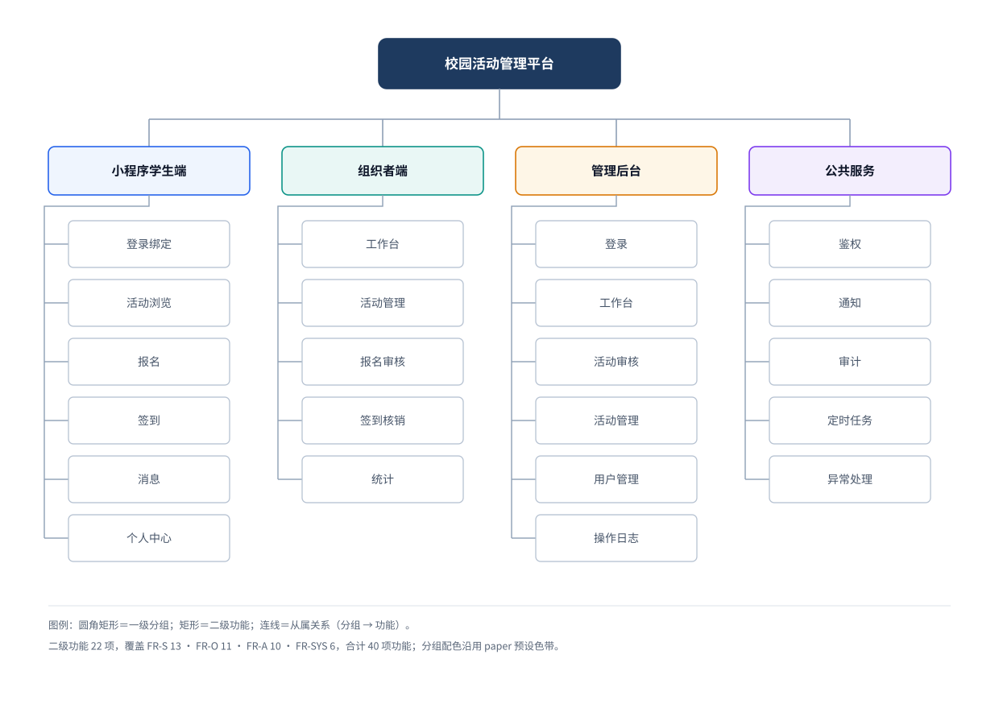
<svg xmlns="http://www.w3.org/2000/svg" width="1240" height="900" viewBox="0 0 1240 900" font-family="'PingFang SC','Hiragino Sans GB','Microsoft YaHei','Noto Sans CJK SC',sans-serif">
<defs>
<marker id="ar" viewBox="0 0 10 10" refX="9" refY="5" markerWidth="7.5"
markerHeight="7.5" orient="auto-start-reverse">
<path d="M0,0 L10,5 L0,10 Z" fill="#8FA0B5"/>
</marker>
<marker id="ar-open" viewBox="0 0 12 12" refX="11" refY="6" markerWidth="9"
markerHeight="9" orient="auto-start-reverse">
<path d="M1,1 L11,6 L1,11" fill="none" stroke="#8FA0B5" stroke-width="1.6"/>
</marker>
<marker id="ar-ink" viewBox="0 0 10 10" refX="9" refY="5" markerWidth="7.5"
markerHeight="7.5" orient="auto-start-reverse">
<path d="M0,0 L10,5 L0,10 Z" fill="#475569"/>
</marker>
</defs>
<rect x="470" y="48" width="300" height="62" rx="10" ry="10" fill="#1E3A5F" stroke="#1E3A5F" stroke-width="1.6"/>
<text x="620" y="85.1" font-size="17" fill="#FFFFFF" text-anchor="middle" font-weight="600">校园活动管理平台</text>
<path d="M620,110 L620,148" stroke="#8FA0B5" stroke-width="1.6" fill="none"/>
<path d="M185,148 L1055,148" stroke="#8FA0B5" stroke-width="1.6" fill="none"/>
<path d="M185,148 L185,182" stroke="#8FA0B5" stroke-width="1.6" fill="none"/>
<rect x="60.0" y="182" width="250" height="60" rx="8" ry="8" fill="#EFF5FE" stroke="#2563EB" stroke-width="1.6"/>
<text x="185" y="217.6" font-size="15.5" fill="#0F172A" text-anchor="middle" font-weight="600">小程序学生端</text>
<path d="M185,242 L185,256 L55.0,256 L55.0,668.0" stroke="#8FA0B5" stroke-width="1.4" fill="none"/>
<path d="M55.0,303.0 L85.0,303.0" stroke="#8FA0B5" stroke-width="1.4" fill="none"/>
<rect x="85.0" y="274" width="200" height="58" rx="6" ry="6" fill="#FFFFFF" stroke="#B6C2D2" stroke-width="1.3"/>
<text x="185" y="308.0" font-size="14" fill="#475569" text-anchor="middle" font-weight="400">登录绑定</text>
<path d="M55.0,376.0 L85.0,376.0" stroke="#8FA0B5" stroke-width="1.4" fill="none"/>
<rect x="85.0" y="347" width="200" height="58" rx="6" ry="6" fill="#FFFFFF" stroke="#B6C2D2" stroke-width="1.3"/>
<text x="185" y="381.0" font-size="14" fill="#475569" text-anchor="middle" font-weight="400">活动浏览</text>
<path d="M55.0,449.0 L85.0,449.0" stroke="#8FA0B5" stroke-width="1.4" fill="none"/>
<rect x="85.0" y="420" width="200" height="58" rx="6" ry="6" fill="#FFFFFF" stroke="#B6C2D2" stroke-width="1.3"/>
<text x="185" y="454.0" font-size="14" fill="#475569" text-anchor="middle" font-weight="400">报名</text>
<path d="M55.0,522.0 L85.0,522.0" stroke="#8FA0B5" stroke-width="1.4" fill="none"/>
<rect x="85.0" y="493" width="200" height="58" rx="6" ry="6" fill="#FFFFFF" stroke="#B6C2D2" stroke-width="1.3"/>
<text x="185" y="527.0" font-size="14" fill="#475569" text-anchor="middle" font-weight="400">签到</text>
<path d="M55.0,595.0 L85.0,595.0" stroke="#8FA0B5" stroke-width="1.4" fill="none"/>
<rect x="85.0" y="566" width="200" height="58" rx="6" ry="6" fill="#FFFFFF" stroke="#B6C2D2" stroke-width="1.3"/>
<text x="185" y="600.0" font-size="14" fill="#475569" text-anchor="middle" font-weight="400">消息</text>
<path d="M55.0,668.0 L85.0,668.0" stroke="#8FA0B5" stroke-width="1.4" fill="none"/>
<rect x="85.0" y="639" width="200" height="58" rx="6" ry="6" fill="#FFFFFF" stroke="#B6C2D2" stroke-width="1.3"/>
<text x="185" y="673.0" font-size="14" fill="#475569" text-anchor="middle" font-weight="400">个人中心</text>
<path d="M475,148 L475,182" stroke="#8FA0B5" stroke-width="1.6" fill="none"/>
<rect x="350.0" y="182" width="250" height="60" rx="8" ry="8" fill="#E9F7F5" stroke="#0D9488" stroke-width="1.6"/>
<text x="475" y="217.6" font-size="15.5" fill="#0F172A" text-anchor="middle" font-weight="600">组织者端</text>
<path d="M475,242 L475,256 L345.0,256 L345.0,595.0" stroke="#8FA0B5" stroke-width="1.4" fill="none"/>
<path d="M345.0,303.0 L375.0,303.0" stroke="#8FA0B5" stroke-width="1.4" fill="none"/>
<rect x="375.0" y="274" width="200" height="58" rx="6" ry="6" fill="#FFFFFF" stroke="#B6C2D2" stroke-width="1.3"/>
<text x="475" y="308.0" font-size="14" fill="#475569" text-anchor="middle" font-weight="400">工作台</text>
<path d="M345.0,376.0 L375.0,376.0" stroke="#8FA0B5" stroke-width="1.4" fill="none"/>
<rect x="375.0" y="347" width="200" height="58" rx="6" ry="6" fill="#FFFFFF" stroke="#B6C2D2" stroke-width="1.3"/>
<text x="475" y="381.0" font-size="14" fill="#475569" text-anchor="middle" font-weight="400">活动管理</text>
<path d="M345.0,449.0 L375.0,449.0" stroke="#8FA0B5" stroke-width="1.4" fill="none"/>
<rect x="375.0" y="420" width="200" height="58" rx="6" ry="6" fill="#FFFFFF" stroke="#B6C2D2" stroke-width="1.3"/>
<text x="475" y="454.0" font-size="14" fill="#475569" text-anchor="middle" font-weight="400">报名审核</text>
<path d="M345.0,522.0 L375.0,522.0" stroke="#8FA0B5" stroke-width="1.4" fill="none"/>
<rect x="375.0" y="493" width="200" height="58" rx="6" ry="6" fill="#FFFFFF" stroke="#B6C2D2" stroke-width="1.3"/>
<text x="475" y="527.0" font-size="14" fill="#475569" text-anchor="middle" font-weight="400">签到核销</text>
<path d="M345.0,595.0 L375.0,595.0" stroke="#8FA0B5" stroke-width="1.4" fill="none"/>
<rect x="375.0" y="566" width="200" height="58" rx="6" ry="6" fill="#FFFFFF" stroke="#B6C2D2" stroke-width="1.3"/>
<text x="475" y="600.0" font-size="14" fill="#475569" text-anchor="middle" font-weight="400">统计</text>
<path d="M765,148 L765,182" stroke="#8FA0B5" stroke-width="1.6" fill="none"/>
<rect x="640.0" y="182" width="250" height="60" rx="8" ry="8" fill="#FEF6E7" stroke="#D97706" stroke-width="1.6"/>
<text x="765" y="217.6" font-size="15.5" fill="#0F172A" text-anchor="middle" font-weight="600">管理后台</text>
<path d="M765,242 L765,256 L635.0,256 L635.0,668.0" stroke="#8FA0B5" stroke-width="1.4" fill="none"/>
<path d="M635.0,303.0 L665.0,303.0" stroke="#8FA0B5" stroke-width="1.4" fill="none"/>
<rect x="665.0" y="274" width="200" height="58" rx="6" ry="6" fill="#FFFFFF" stroke="#B6C2D2" stroke-width="1.3"/>
<text x="765" y="308.0" font-size="14" fill="#475569" text-anchor="middle" font-weight="400">登录</text>
<path d="M635.0,376.0 L665.0,376.0" stroke="#8FA0B5" stroke-width="1.4" fill="none"/>
<rect x="665.0" y="347" width="200" height="58" rx="6" ry="6" fill="#FFFFFF" stroke="#B6C2D2" stroke-width="1.3"/>
<text x="765" y="381.0" font-size="14" fill="#475569" text-anchor="middle" font-weight="400">工作台</text>
<path d="M635.0,449.0 L665.0,449.0" stroke="#8FA0B5" stroke-width="1.4" fill="none"/>
<rect x="665.0" y="420" width="200" height="58" rx="6" ry="6" fill="#FFFFFF" stroke="#B6C2D2" stroke-width="1.3"/>
<text x="765" y="454.0" font-size="14" fill="#475569" text-anchor="middle" font-weight="400">活动审核</text>
<path d="M635.0,522.0 L665.0,522.0" stroke="#8FA0B5" stroke-width="1.4" fill="none"/>
<rect x="665.0" y="493" width="200" height="58" rx="6" ry="6" fill="#FFFFFF" stroke="#B6C2D2" stroke-width="1.3"/>
<text x="765" y="527.0" font-size="14" fill="#475569" text-anchor="middle" font-weight="400">活动管理</text>
<path d="M635.0,595.0 L665.0,595.0" stroke="#8FA0B5" stroke-width="1.4" fill="none"/>
<rect x="665.0" y="566" width="200" height="58" rx="6" ry="6" fill="#FFFFFF" stroke="#B6C2D2" stroke-width="1.3"/>
<text x="765" y="600.0" font-size="14" fill="#475569" text-anchor="middle" font-weight="400">用户管理</text>
<path d="M635.0,668.0 L665.0,668.0" stroke="#8FA0B5" stroke-width="1.4" fill="none"/>
<rect x="665.0" y="639" width="200" height="58" rx="6" ry="6" fill="#FFFFFF" stroke="#B6C2D2" stroke-width="1.3"/>
<text x="765" y="673.0" font-size="14" fill="#475569" text-anchor="middle" font-weight="400">操作日志</text>
<path d="M1055,148 L1055,182" stroke="#8FA0B5" stroke-width="1.6" fill="none"/>
<rect x="930.0" y="182" width="250" height="60" rx="8" ry="8" fill="#F3EEFD" stroke="#7C3AED" stroke-width="1.6"/>
<text x="1055" y="217.6" font-size="15.5" fill="#0F172A" text-anchor="middle" font-weight="600">公共服务</text>
<path d="M1055,242 L1055,256 L925.0,256 L925.0,595.0" stroke="#8FA0B5" stroke-width="1.4" fill="none"/>
<path d="M925.0,303.0 L955.0,303.0" stroke="#8FA0B5" stroke-width="1.4" fill="none"/>
<rect x="955.0" y="274" width="200" height="58" rx="6" ry="6" fill="#FFFFFF" stroke="#B6C2D2" stroke-width="1.3"/>
<text x="1055" y="308.0" font-size="14" fill="#475569" text-anchor="middle" font-weight="400">鉴权</text>
<path d="M925.0,376.0 L955.0,376.0" stroke="#8FA0B5" stroke-width="1.4" fill="none"/>
<rect x="955.0" y="347" width="200" height="58" rx="6" ry="6" fill="#FFFFFF" stroke="#B6C2D2" stroke-width="1.3"/>
<text x="1055" y="381.0" font-size="14" fill="#475569" text-anchor="middle" font-weight="400">通知</text>
<path d="M925.0,449.0 L955.0,449.0" stroke="#8FA0B5" stroke-width="1.4" fill="none"/>
<rect x="955.0" y="420" width="200" height="58" rx="6" ry="6" fill="#FFFFFF" stroke="#B6C2D2" stroke-width="1.3"/>
<text x="1055" y="454.0" font-size="14" fill="#475569" text-anchor="middle" font-weight="400">审计</text>
<path d="M925.0,522.0 L955.0,522.0" stroke="#8FA0B5" stroke-width="1.4" fill="none"/>
<rect x="955.0" y="493" width="200" height="58" rx="6" ry="6" fill="#FFFFFF" stroke="#B6C2D2" stroke-width="1.3"/>
<text x="1055" y="527.0" font-size="14" fill="#475569" text-anchor="middle" font-weight="400">定时任务</text>
<path d="M925.0,595.0 L955.0,595.0" stroke="#8FA0B5" stroke-width="1.4" fill="none"/>
<rect x="955.0" y="566" width="200" height="58" rx="6" ry="6" fill="#FFFFFF" stroke="#B6C2D2" stroke-width="1.3"/>
<text x="1055" y="600.0" font-size="14" fill="#475569" text-anchor="middle" font-weight="400">异常处理</text>
<path d="M60,752 L1180,752" stroke="#E3E8EF" stroke-width="1.2" fill="none"/>
<text x="60" y="780.5" font-size="12.5" fill="#5A6779" text-anchor="start" font-weight="400">图例：圆角矩形＝一级分组；矩形＝二级功能；连线＝从属关系（分组 → 功能）。</text>
<text x="60" y="806.5" font-size="12.5" fill="#5A6779" text-anchor="start" font-weight="400">二级功能 22 项，覆盖 FR-S 13 · FR-O 11 · FR-A 10 · FR-SYS 6，合计 40 项功能；分组配色沿用 paper 预设色带。</text>
</svg>
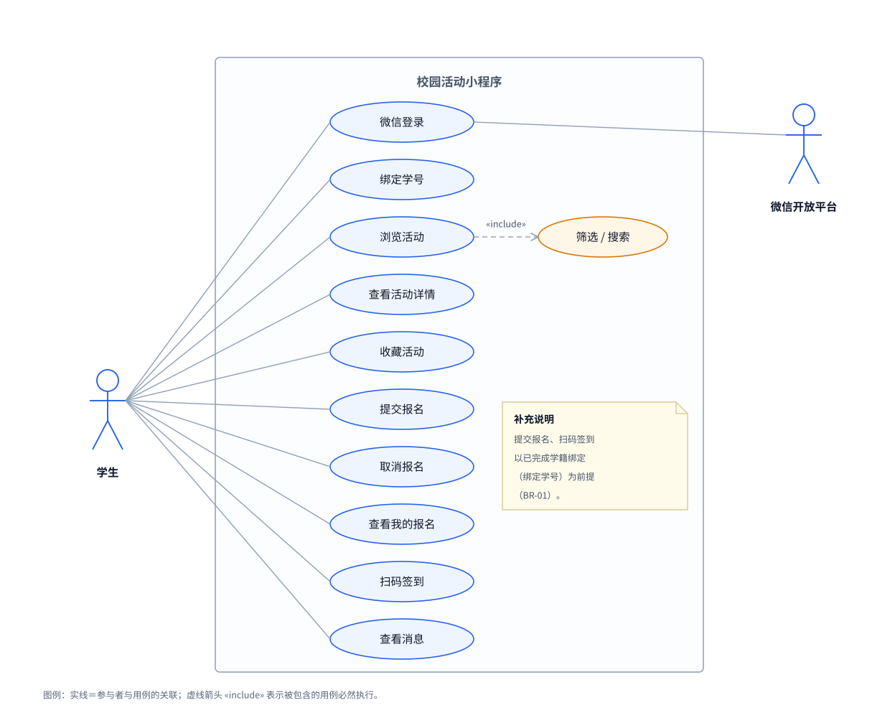
<svg xmlns="http://www.w3.org/2000/svg" width="1240" height="1000" viewBox="0 0 1240 1000" font-family="'PingFang SC','Hiragino Sans GB','Microsoft YaHei','Noto Sans CJK SC',sans-serif">
<defs>
<marker id="ar" viewBox="0 0 10 10" refX="9" refY="5" markerWidth="7.5"
markerHeight="7.5" orient="auto-start-reverse">
<path d="M0,0 L10,5 L0,10 Z" fill="#8FA0B5"/>
</marker>
<marker id="ar-open" viewBox="0 0 12 12" refX="11" refY="6" markerWidth="9"
markerHeight="9" orient="auto-start-reverse">
<path d="M1,1 L11,6 L1,11" fill="none" stroke="#8FA0B5" stroke-width="1.6"/>
</marker>
<marker id="ar-ink" viewBox="0 0 10 10" refX="9" refY="5" markerWidth="7.5"
markerHeight="7.5" orient="auto-start-reverse">
<path d="M0,0 L10,5 L0,10 Z" fill="#475569"/>
</marker>
</defs>
<rect x="300" y="80" width="680" height="856" rx="6" ry="6" fill="#FCFDFF" stroke="#94A3B8" stroke-width="1.6"/>
<text x="640.0" y="120.1" font-size="17" fill="#475569" text-anchor="middle" font-weight="600">校园活动小程序</text>
<ellipse cx="560" cy="170" rx="100" ry="28" fill="#EFF5FE" stroke="#2563EB" stroke-width="1.6"/>
<text x="560" y="175.6" font-size="15.5" fill="#0F172A" text-anchor="middle" font-weight="400">微信登录</text>
<ellipse cx="560" cy="250" rx="100" ry="28" fill="#EFF5FE" stroke="#2563EB" stroke-width="1.6"/>
<text x="560" y="255.6" font-size="15.5" fill="#0F172A" text-anchor="middle" font-weight="400">绑定学号</text>
<ellipse cx="560" cy="330" rx="100" ry="28" fill="#EFF5FE" stroke="#2563EB" stroke-width="1.6"/>
<text x="560" y="335.6" font-size="15.5" fill="#0F172A" text-anchor="middle" font-weight="400">浏览活动</text>
<ellipse cx="560" cy="410" rx="100" ry="28" fill="#EFF5FE" stroke="#2563EB" stroke-width="1.6"/>
<text x="560" y="415.6" font-size="15.5" fill="#0F172A" text-anchor="middle" font-weight="400">查看活动详情</text>
<ellipse cx="560" cy="490" rx="100" ry="28" fill="#EFF5FE" stroke="#2563EB" stroke-width="1.6"/>
<text x="560" y="495.6" font-size="15.5" fill="#0F172A" text-anchor="middle" font-weight="400">收藏活动</text>
<ellipse cx="560" cy="570" rx="100" ry="28" fill="#EFF5FE" stroke="#2563EB" stroke-width="1.6"/>
<text x="560" y="575.6" font-size="15.5" fill="#0F172A" text-anchor="middle" font-weight="400">提交报名</text>
<ellipse cx="560" cy="650" rx="100" ry="28" fill="#EFF5FE" stroke="#2563EB" stroke-width="1.6"/>
<text x="560" y="655.6" font-size="15.5" fill="#0F172A" text-anchor="middle" font-weight="400">取消报名</text>
<ellipse cx="560" cy="730" rx="100" ry="28" fill="#EFF5FE" stroke="#2563EB" stroke-width="1.6"/>
<text x="560" y="735.6" font-size="15.5" fill="#0F172A" text-anchor="middle" font-weight="400">查看我的报名</text>
<ellipse cx="560" cy="810" rx="100" ry="28" fill="#EFF5FE" stroke="#2563EB" stroke-width="1.6"/>
<text x="560" y="815.6" font-size="15.5" fill="#0F172A" text-anchor="middle" font-weight="400">扫码签到</text>
<ellipse cx="560" cy="890" rx="100" ry="28" fill="#EFF5FE" stroke="#2563EB" stroke-width="1.6"/>
<text x="560" y="895.6" font-size="15.5" fill="#0F172A" text-anchor="middle" font-weight="400">查看消息</text>
<circle cx="150" cy="530" r="15" fill="#FFFFFF" stroke="#2563EB" stroke-width="1.9"/>
<path d="M150,545 L150,586" stroke="#2563EB" stroke-width="1.9"/>
<path d="M125,558 L175,558" stroke="#2563EB" stroke-width="1.9"/>
<path d="M150,586 L129,626" stroke="#2563EB" stroke-width="1.9"/>
<path d="M150,586 L171,626" stroke="#2563EB" stroke-width="1.9"/>
<text x="150" y="663.6" font-size="15.5" fill="#0F172A" text-anchor="middle" font-weight="600">学生</text>
<path d="M175,558 L460,170" stroke="#8FA0B5" stroke-width="1.4" fill="none"/>
<path d="M175,558 L460,250" stroke="#8FA0B5" stroke-width="1.4" fill="none"/>
<path d="M175,558 L460,330" stroke="#8FA0B5" stroke-width="1.4" fill="none"/>
<path d="M175,558 L460,410" stroke="#8FA0B5" stroke-width="1.4" fill="none"/>
<path d="M175,558 L460,490" stroke="#8FA0B5" stroke-width="1.4" fill="none"/>
<path d="M175,558 L460,570" stroke="#8FA0B5" stroke-width="1.4" fill="none"/>
<path d="M175,558 L460,650" stroke="#8FA0B5" stroke-width="1.4" fill="none"/>
<path d="M175,558 L460,730" stroke="#8FA0B5" stroke-width="1.4" fill="none"/>
<path d="M175,558 L460,810" stroke="#8FA0B5" stroke-width="1.4" fill="none"/>
<path d="M175,558 L460,890" stroke="#8FA0B5" stroke-width="1.4" fill="none"/>
<circle cx="1120" cy="160" r="15" fill="#FFFFFF" stroke="#2563EB" stroke-width="1.9"/>
<path d="M1120,175 L1120,216" stroke="#2563EB" stroke-width="1.9"/>
<path d="M1095,188 L1145,188" stroke="#2563EB" stroke-width="1.9"/>
<path d="M1120,216 L1099,256" stroke="#2563EB" stroke-width="1.9"/>
<path d="M1120,216 L1141,256" stroke="#2563EB" stroke-width="1.9"/>
<text x="1120" y="293.6" font-size="15.5" fill="#0F172A" text-anchor="middle" font-weight="600">微信开放平台</text>
<path d="M1095,188 L660,170" stroke="#8FA0B5" stroke-width="1.4" fill="none"/>
<ellipse cx="840" cy="330" rx="90" ry="28" fill="#FEF6E7" stroke="#D97706" stroke-width="1.6"/>
<text x="840" y="335.6" font-size="15.5" fill="#0F172A" text-anchor="middle" font-weight="400">筛选 / 搜索</text>
<path d="M660,330 L750,330" stroke="#8FA0B5" stroke-width="1.4" fill="none" stroke-dasharray="7 5" marker-end="url(#ar-open)"/>
<text x="705" y="316.5" font-size="12.5" fill="#475569" text-anchor="middle" font-weight="400">«include»</text>
<path d="M700,560 H942 L958,576 V710 H700 Z" fill="#FFFBEB" stroke="#D6C48A" stroke-width="1.3"/>
<path d="M942,560 V576 H958" fill="none" stroke="#D6C48A" stroke-width="1.3"/>
<text x="716" y="589.0" font-size="14" fill="#0F172A" text-anchor="start" font-weight="600">补充说明</text>
<text x="716" y="616.5" font-size="12.5" fill="#475569" text-anchor="start" font-weight="400">提交报名、扫码签到</text>
<text x="716" y="642.5" font-size="12.5" fill="#475569" text-anchor="start" font-weight="400">以已完成学籍绑定</text>
<text x="716" y="668.5" font-size="12.5" fill="#475569" text-anchor="start" font-weight="400">（绑定学号）为前提</text>
<text x="716" y="694.5" font-size="12.5" fill="#475569" text-anchor="start" font-weight="400">（BR-01）。</text>
<text x="60" y="972.5" font-size="12.5" fill="#5A6779" text-anchor="start" font-weight="400">图例：实线＝参与者与用例的关联；虚线箭头 «include» 表示被包含的用例必然执行。</text>
</svg>
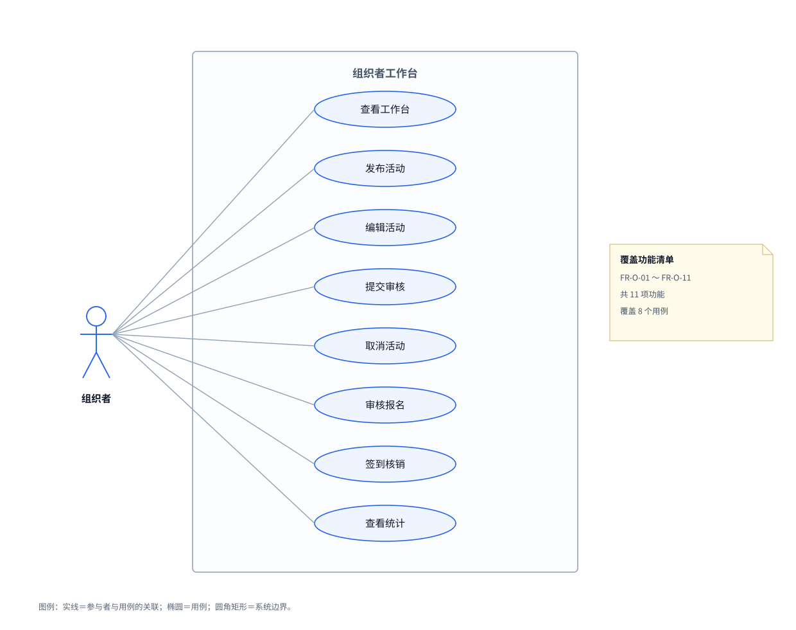
<svg xmlns="http://www.w3.org/2000/svg" width="1240" height="980" viewBox="0 0 1240 980" font-family="'PingFang SC','Hiragino Sans GB','Microsoft YaHei','Noto Sans CJK SC',sans-serif">
<defs>
<marker id="ar" viewBox="0 0 10 10" refX="9" refY="5" markerWidth="7.5"
markerHeight="7.5" orient="auto-start-reverse">
<path d="M0,0 L10,5 L0,10 Z" fill="#8FA0B5"/>
</marker>
<marker id="ar-open" viewBox="0 0 12 12" refX="11" refY="6" markerWidth="9"
markerHeight="9" orient="auto-start-reverse">
<path d="M1,1 L11,6 L1,11" fill="none" stroke="#8FA0B5" stroke-width="1.6"/>
</marker>
<marker id="ar-ink" viewBox="0 0 10 10" refX="9" refY="5" markerWidth="7.5"
markerHeight="7.5" orient="auto-start-reverse">
<path d="M0,0 L10,5 L0,10 Z" fill="#475569"/>
</marker>
</defs>
<rect x="300" y="80" width="600" height="810" rx="6" ry="6" fill="#FCFDFF" stroke="#94A3B8" stroke-width="1.6"/>
<text x="600.0" y="120.1" font-size="17" fill="#475569" text-anchor="middle" font-weight="600">组织者工作台</text>
<ellipse cx="600" cy="170" rx="110" ry="28" fill="#EFF5FE" stroke="#2563EB" stroke-width="1.6"/>
<text x="600" y="175.6" font-size="15.5" fill="#0F172A" text-anchor="middle" font-weight="400">查看工作台</text>
<ellipse cx="600" cy="262" rx="110" ry="28" fill="#EFF5FE" stroke="#2563EB" stroke-width="1.6"/>
<text x="600" y="267.6" font-size="15.5" fill="#0F172A" text-anchor="middle" font-weight="400">发布活动</text>
<ellipse cx="600" cy="354" rx="110" ry="28" fill="#EFF5FE" stroke="#2563EB" stroke-width="1.6"/>
<text x="600" y="359.6" font-size="15.5" fill="#0F172A" text-anchor="middle" font-weight="400">编辑活动</text>
<ellipse cx="600" cy="446" rx="110" ry="28" fill="#EFF5FE" stroke="#2563EB" stroke-width="1.6"/>
<text x="600" y="451.6" font-size="15.5" fill="#0F172A" text-anchor="middle" font-weight="400">提交审核</text>
<ellipse cx="600" cy="538" rx="110" ry="28" fill="#EFF5FE" stroke="#2563EB" stroke-width="1.6"/>
<text x="600" y="543.6" font-size="15.5" fill="#0F172A" text-anchor="middle" font-weight="400">取消活动</text>
<ellipse cx="600" cy="630" rx="110" ry="28" fill="#EFF5FE" stroke="#2563EB" stroke-width="1.6"/>
<text x="600" y="635.6" font-size="15.5" fill="#0F172A" text-anchor="middle" font-weight="400">审核报名</text>
<ellipse cx="600" cy="722" rx="110" ry="28" fill="#EFF5FE" stroke="#2563EB" stroke-width="1.6"/>
<text x="600" y="727.6" font-size="15.5" fill="#0F172A" text-anchor="middle" font-weight="400">签到核销</text>
<ellipse cx="600" cy="814" rx="110" ry="28" fill="#EFF5FE" stroke="#2563EB" stroke-width="1.6"/>
<text x="600" y="819.6" font-size="15.5" fill="#0F172A" text-anchor="middle" font-weight="400">查看统计</text>
<circle cx="150" cy="492" r="15" fill="#FFFFFF" stroke="#2563EB" stroke-width="1.9"/>
<path d="M150,507 L150,548" stroke="#2563EB" stroke-width="1.9"/>
<path d="M125,520 L175,520" stroke="#2563EB" stroke-width="1.9"/>
<path d="M150,548 L129,588" stroke="#2563EB" stroke-width="1.9"/>
<path d="M150,548 L171,588" stroke="#2563EB" stroke-width="1.9"/>
<text x="150" y="625.6" font-size="15.5" fill="#0F172A" text-anchor="middle" font-weight="600">组织者</text>
<path d="M175,520 L490,170" stroke="#8FA0B5" stroke-width="1.4" fill="none"/>
<path d="M175,520 L490,262" stroke="#8FA0B5" stroke-width="1.4" fill="none"/>
<path d="M175,520 L490,354" stroke="#8FA0B5" stroke-width="1.4" fill="none"/>
<path d="M175,520 L490,446" stroke="#8FA0B5" stroke-width="1.4" fill="none"/>
<path d="M175,520 L490,538" stroke="#8FA0B5" stroke-width="1.4" fill="none"/>
<path d="M175,520 L490,630" stroke="#8FA0B5" stroke-width="1.4" fill="none"/>
<path d="M175,520 L490,722" stroke="#8FA0B5" stroke-width="1.4" fill="none"/>
<path d="M175,520 L490,814" stroke="#8FA0B5" stroke-width="1.4" fill="none"/>
<path d="M950,380 H1188 L1204,396 V530 H950 Z" fill="#FFFBEB" stroke="#D6C48A" stroke-width="1.3"/>
<path d="M1188,380 V396 H1204" fill="none" stroke="#D6C48A" stroke-width="1.3"/>
<text x="966" y="409.0" font-size="14" fill="#0F172A" text-anchor="start" font-weight="600">覆盖功能清单</text>
<text x="966" y="436.5" font-size="12.5" fill="#475569" text-anchor="start" font-weight="400">FR-O-01 ～ FR-O-11</text>
<text x="966" y="462.5" font-size="12.5" fill="#475569" text-anchor="start" font-weight="400">共 11 项功能</text>
<text x="966" y="488.5" font-size="12.5" fill="#475569" text-anchor="start" font-weight="400">覆盖 8 个用例</text>
<text x="60" y="948.5" font-size="12.5" fill="#5A6779" text-anchor="start" font-weight="400">图例：实线＝参与者与用例的关联；椭圆＝用例；圆角矩形＝系统边界。</text>
</svg>
<svg xmlns="http://www.w3.org/2000/svg" width="1240" height="980" viewBox="0 0 1240 980" font-family="'PingFang SC','Hiragino Sans GB','Microsoft YaHei','Noto Sans CJK SC',sans-serif">
<defs>
<marker id="ar" viewBox="0 0 10 10" refX="9" refY="5" markerWidth="7.5"
markerHeight="7.5" orient="auto-start-reverse">
<path d="M0,0 L10,5 L0,10 Z" fill="#8FA0B5"/>
</marker>
<marker id="ar-open" viewBox="0 0 12 12" refX="11" refY="6" markerWidth="9"
markerHeight="9" orient="auto-start-reverse">
<path d="M1,1 L11,6 L1,11" fill="none" stroke="#8FA0B5" stroke-width="1.6"/>
</marker>
<marker id="ar-ink" viewBox="0 0 10 10" refX="9" refY="5" markerWidth="7.5"
markerHeight="7.5" orient="auto-start-reverse">
<path d="M0,0 L10,5 L0,10 Z" fill="#475569"/>
</marker>
</defs>
<rect x="300" y="80" width="600" height="810" rx="6" ry="6" fill="#FCFDFF" stroke="#94A3B8" stroke-width="1.6"/>
<text x="600.0" y="120.1" font-size="17" fill="#475569" text-anchor="middle" font-weight="600">管理后台</text>
<ellipse cx="600" cy="170" rx="110" ry="28" fill="#EFF5FE" stroke="#2563EB" stroke-width="1.6"/>
<text x="600" y="175.6" font-size="15.5" fill="#0F172A" text-anchor="middle" font-weight="400">登录后台</text>
<ellipse cx="600" cy="262" rx="110" ry="28" fill="#EFF5FE" stroke="#2563EB" stroke-width="1.6"/>
<text x="600" y="267.6" font-size="15.5" fill="#0F172A" text-anchor="middle" font-weight="400">工作台概览</text>
<ellipse cx="600" cy="354" rx="110" ry="28" fill="#EFF5FE" stroke="#2563EB" stroke-width="1.6"/>
<text x="600" y="359.6" font-size="15.5" fill="#0F172A" text-anchor="middle" font-weight="400">活动审核</text>
<ellipse cx="600" cy="446" rx="110" ry="28" fill="#EFF5FE" stroke="#2563EB" stroke-width="1.6"/>
<text x="600" y="451.6" font-size="15.5" fill="#0F172A" text-anchor="middle" font-weight="400">活动管理</text>
<ellipse cx="600" cy="538" rx="110" ry="28" fill="#EFF5FE" stroke="#2563EB" stroke-width="1.6"/>
<text x="600" y="543.6" font-size="15.5" fill="#0F172A" text-anchor="middle" font-weight="400">活动下架</text>
<ellipse cx="600" cy="630" rx="110" ry="28" fill="#EFF5FE" stroke="#2563EB" stroke-width="1.6"/>
<text x="600" y="635.6" font-size="15.5" fill="#0F172A" text-anchor="middle" font-weight="400">用户管理</text>
<ellipse cx="600" cy="722" rx="110" ry="28" fill="#EFF5FE" stroke="#2563EB" stroke-width="1.6"/>
<text x="600" y="727.6" font-size="15.5" fill="#0F172A" text-anchor="middle" font-weight="400">角色变更</text>
<ellipse cx="600" cy="814" rx="110" ry="28" fill="#EFF5FE" stroke="#2563EB" stroke-width="1.6"/>
<text x="600" y="819.6" font-size="15.5" fill="#0F172A" text-anchor="middle" font-weight="400">查看操作日志</text>
<circle cx="150" cy="492" r="15" fill="#FFFFFF" stroke="#2563EB" stroke-width="1.9"/>
<path d="M150,507 L150,548" stroke="#2563EB" stroke-width="1.9"/>
<path d="M125,520 L175,520" stroke="#2563EB" stroke-width="1.9"/>
<path d="M150,548 L129,588" stroke="#2563EB" stroke-width="1.9"/>
<path d="M150,548 L171,588" stroke="#2563EB" stroke-width="1.9"/>
<text x="150" y="625.6" font-size="15.5" fill="#0F172A" text-anchor="middle" font-weight="600">审核员/管理员</text>
<path d="M175,520 L490,170" stroke="#8FA0B5" stroke-width="1.4" fill="none"/>
<path d="M175,520 L490,262" stroke="#8FA0B5" stroke-width="1.4" fill="none"/>
<path d="M175,520 L490,354" stroke="#8FA0B5" stroke-width="1.4" fill="none"/>
<path d="M175,520 L490,446" stroke="#8FA0B5" stroke-width="1.4" fill="none"/>
<path d="M175,520 L490,538" stroke="#8FA0B5" stroke-width="1.4" fill="none"/>
<path d="M175,520 L490,630" stroke="#8FA0B5" stroke-width="1.4" fill="none"/>
<path d="M175,520 L490,722" stroke="#8FA0B5" stroke-width="1.4" fill="none"/>
<path d="M175,520 L490,814" stroke="#8FA0B5" stroke-width="1.4" fill="none"/>
<path d="M950,380 H1188 L1204,396 V530 H950 Z" fill="#FFFBEB" stroke="#D6C48A" stroke-width="1.3"/>
<path d="M1188,380 V396 H1204" fill="none" stroke="#D6C48A" stroke-width="1.3"/>
<text x="966" y="409.0" font-size="14" fill="#0F172A" text-anchor="start" font-weight="600">覆盖功能清单</text>
<text x="966" y="436.5" font-size="12.5" fill="#475569" text-anchor="start" font-weight="400">FR-A-01 ～ FR-A-10</text>
<text x="966" y="462.5" font-size="12.5" fill="#475569" text-anchor="start" font-weight="400">共 10 项功能</text>
<text x="966" y="488.5" font-size="12.5" fill="#475569" text-anchor="start" font-weight="400">覆盖 8 个用例</text>
<text x="60" y="948.5" font-size="12.5" fill="#5A6779" text-anchor="start" font-weight="400">图例：实线＝参与者与用例的关联；椭圆＝用例；圆角矩形＝系统边界。</text>
</svg>
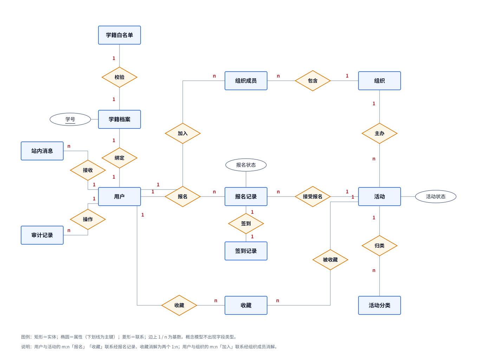
<svg xmlns="http://www.w3.org/2000/svg" width="1400" height="1020" viewBox="0 0 1400 1020" font-family="'PingFang SC','Hiragino Sans GB','Microsoft YaHei','Noto Sans CJK SC',sans-serif">
<defs>
<marker id="ar" viewBox="0 0 10 10" refX="9" refY="5" markerWidth="7.5"
markerHeight="7.5" orient="auto-start-reverse">
<path d="M0,0 L10,5 L0,10 Z" fill="#8FA0B5"/>
</marker>
<marker id="ar-open" viewBox="0 0 12 12" refX="11" refY="6" markerWidth="9"
markerHeight="9" orient="auto-start-reverse">
<path d="M1,1 L11,6 L1,11" fill="none" stroke="#8FA0B5" stroke-width="1.6"/>
</marker>
<marker id="ar-ink" viewBox="0 0 10 10" refX="9" refY="5" markerWidth="7.5"
markerHeight="7.5" orient="auto-start-reverse">
<path d="M0,0 L10,5 L0,10 Z" fill="#475569"/>
</marker>
</defs>
<path d="M340,126 L340,191" stroke="#8FA0B5" stroke-width="1.3" fill="none"/>
<path d="M340,249 L340,314" stroke="#8FA0B5" stroke-width="1.3" fill="none"/>
<path d="M340,366 L340,421" stroke="#8FA0B5" stroke-width="1.3" fill="none"/>
<path d="M340,479 L340,534" stroke="#8FA0B5" stroke-width="1.3" fill="none"/>
<path d="M280,540 L250,540 L250,430 L180,430" stroke="#8FA0B5" stroke-width="1.3" fill="none"/>
<path d="M280,580 L250,580 L250,670 L180,670" stroke="#8FA0B5" stroke-width="1.3" fill="none"/>
<path d="M400,540 L520,540 L520,230 L640,230" stroke="#8FA0B5" stroke-width="1.3" fill="none"/>
<path d="M400,560 L640,560" stroke="#8FA0B5" stroke-width="1.3" fill="none"/>
<path d="M390,586 L390,870 L640,870" stroke="#8FA0B5" stroke-width="1.3" fill="none"/>
<path d="M700,586 L700,689" stroke="#8FA0B5" stroke-width="1.3" fill="none"/>
<path d="M760,230 L1020,230" stroke="#8FA0B5" stroke-width="1.3" fill="none"/>
<path d="M760,560 L1020,560" stroke="#8FA0B5" stroke-width="1.3" fill="none"/>
<path d="M760,870 L940,870 L940,575 L1020,575" stroke="#8FA0B5" stroke-width="1.3" fill="none"/>
<path d="M1080,256 L1080,534" stroke="#8FA0B5" stroke-width="1.3" fill="none"/>
<path d="M1080,586 L1080,844" stroke="#8FA0B5" stroke-width="1.3" fill="none"/>
<path d="M258,340 L280,340" stroke="#8FA0B5" stroke-width="1.3" fill="none"/>
<path d="M700,488 L700,534" stroke="#8FA0B5" stroke-width="1.3" fill="none"/>
<path d="M1140,560 L1182,560" stroke="#8FA0B5" stroke-width="1.3" fill="none"/>
<rect x="280.0" y="74.0" width="120" height="52" rx="3" ry="3" fill="#EFF5FE" stroke="#2563EB" stroke-width="1.7"/>
<text x="340" y="105.6" font-size="15.5" fill="#0F172A" text-anchor="middle" font-weight="600">学籍白名单</text>
<rect x="280.0" y="314.0" width="120" height="52" rx="3" ry="3" fill="#EFF5FE" stroke="#2563EB" stroke-width="1.7"/>
<text x="340" y="345.6" font-size="15.5" fill="#0F172A" text-anchor="middle" font-weight="600">学籍档案</text>
<rect x="280.0" y="534.0" width="120" height="52" rx="3" ry="3" fill="#EFF5FE" stroke="#2563EB" stroke-width="1.7"/>
<text x="340" y="565.6" font-size="15.5" fill="#0F172A" text-anchor="middle" font-weight="600">用户</text>
<rect x="60.0" y="404.0" width="120" height="52" rx="3" ry="3" fill="#EFF5FE" stroke="#2563EB" stroke-width="1.7"/>
<text x="120" y="435.6" font-size="15.5" fill="#0F172A" text-anchor="middle" font-weight="600">站内消息</text>
<rect x="60.0" y="644.0" width="120" height="52" rx="3" ry="3" fill="#EFF5FE" stroke="#2563EB" stroke-width="1.7"/>
<text x="120" y="675.6" font-size="15.5" fill="#0F172A" text-anchor="middle" font-weight="600">审计记录</text>
<rect x="640.0" y="204.0" width="120" height="52" rx="3" ry="3" fill="#EFF5FE" stroke="#2563EB" stroke-width="1.7"/>
<text x="700" y="235.6" font-size="15.5" fill="#0F172A" text-anchor="middle" font-weight="600">组织成员</text>
<rect x="640.0" y="534.0" width="120" height="52" rx="3" ry="3" fill="#EFF5FE" stroke="#2563EB" stroke-width="1.7"/>
<text x="700" y="565.6" font-size="15.5" fill="#0F172A" text-anchor="middle" font-weight="600">报名记录</text>
<rect x="640.0" y="689.0" width="120" height="52" rx="3" ry="3" fill="#EFF5FE" stroke="#2563EB" stroke-width="1.7"/>
<text x="700" y="720.6" font-size="15.5" fill="#0F172A" text-anchor="middle" font-weight="600">签到记录</text>
<rect x="640.0" y="844.0" width="120" height="52" rx="3" ry="3" fill="#EFF5FE" stroke="#2563EB" stroke-width="1.7"/>
<text x="700" y="875.6" font-size="15.5" fill="#0F172A" text-anchor="middle" font-weight="600">收藏</text>
<rect x="1020.0" y="204.0" width="120" height="52" rx="3" ry="3" fill="#EFF5FE" stroke="#2563EB" stroke-width="1.7"/>
<text x="1080" y="235.6" font-size="15.5" fill="#0F172A" text-anchor="middle" font-weight="600">组织</text>
<rect x="1020.0" y="534.0" width="120" height="52" rx="3" ry="3" fill="#EFF5FE" stroke="#2563EB" stroke-width="1.7"/>
<text x="1080" y="565.6" font-size="15.5" fill="#0F172A" text-anchor="middle" font-weight="600">活动</text>
<rect x="1020.0" y="844.0" width="120" height="52" rx="3" ry="3" fill="#EFF5FE" stroke="#2563EB" stroke-width="1.7"/>
<text x="1080" y="875.6" font-size="15.5" fill="#0F172A" text-anchor="middle" font-weight="600">活动分类</text>
<ellipse cx="200" cy="340" rx="58" ry="18" fill="#FFFFFF" stroke="#64748B" stroke-width="1.5"/>
<text x="200" y="345.0" font-size="14" fill="#0F172A" text-anchor="middle" font-weight="400">学号</text>
<path d="M186.0,352 L214.0,352" stroke="#0F172A" stroke-width="1.1"/>
<ellipse cx="700" cy="470" rx="58" ry="18" fill="#FFFFFF" stroke="#64748B" stroke-width="1.5"/>
<text x="700" y="475.0" font-size="14" fill="#0F172A" text-anchor="middle" font-weight="400">报名状态</text>
<ellipse cx="1240" cy="560" rx="58" ry="18" fill="#FFFFFF" stroke="#64748B" stroke-width="1.5"/>
<text x="1240" y="565.0" font-size="14" fill="#0F172A" text-anchor="middle" font-weight="400">活动状态</text>
<polygon points="340,191.0 390.0,220 340,249.0 290.0,220" fill="#FEF6E7" stroke="#D97706" stroke-width="1.7"/>
<text x="340" y="225.0" font-size="14" fill="#0F172A" text-anchor="middle" font-weight="600">校验</text>
<polygon points="340,421.0 390.0,450 340,479.0 290.0,450" fill="#FEF6E7" stroke="#D97706" stroke-width="1.7"/>
<text x="340" y="455.0" font-size="14" fill="#0F172A" text-anchor="middle" font-weight="600">绑定</text>
<polygon points="250,456.0 300.0,485 250,514.0 200.0,485" fill="#FEF6E7" stroke="#D97706" stroke-width="1.7"/>
<text x="250" y="490.0" font-size="14" fill="#0F172A" text-anchor="middle" font-weight="600">接收</text>
<polygon points="250,596.0 300.0,625 250,654.0 200.0,625" fill="#FEF6E7" stroke="#D97706" stroke-width="1.7"/>
<text x="250" y="630.0" font-size="14" fill="#0F172A" text-anchor="middle" font-weight="600">操作</text>
<polygon points="520,351.0 570.0,380 520,409.0 470.0,380" fill="#FEF6E7" stroke="#D97706" stroke-width="1.7"/>
<text x="520" y="385.0" font-size="14" fill="#0F172A" text-anchor="middle" font-weight="600">加入</text>
<polygon points="520,531.0 570.0,560 520,589.0 470.0,560" fill="#FEF6E7" stroke="#D97706" stroke-width="1.7"/>
<text x="520" y="565.0" font-size="14" fill="#0F172A" text-anchor="middle" font-weight="600">报名</text>
<polygon points="510,841.0 560.0,870 510,899.0 460.0,870" fill="#FEF6E7" stroke="#D97706" stroke-width="1.7"/>
<text x="510" y="875.0" font-size="14" fill="#0F172A" text-anchor="middle" font-weight="600">收藏</text>
<polygon points="700,608.0 750.0,637 700,666.0 650.0,637" fill="#FEF6E7" stroke="#D97706" stroke-width="1.7"/>
<text x="700" y="642.0" font-size="14" fill="#0F172A" text-anchor="middle" font-weight="600">签到</text>
<polygon points="890,201.0 940.0,230 890,259.0 840.0,230" fill="#FEF6E7" stroke="#D97706" stroke-width="1.7"/>
<text x="890" y="235.0" font-size="14" fill="#0F172A" text-anchor="middle" font-weight="600">包含</text>
<polygon points="890,531.0 940.0,560 890,589.0 840.0,560" fill="#FEF6E7" stroke="#D97706" stroke-width="1.7"/>
<text x="890" y="565.0" font-size="14" fill="#0F172A" text-anchor="middle" font-weight="600">接受报名</text>
<polygon points="940,711.0 990.0,740 940,769.0 890.0,740" fill="#FEF6E7" stroke="#D97706" stroke-width="1.7"/>
<text x="940" y="745.0" font-size="14" fill="#0F172A" text-anchor="middle" font-weight="600">被收藏</text>
<polygon points="1080,351.0 1130.0,380 1080,409.0 1030.0,380" fill="#FEF6E7" stroke="#D97706" stroke-width="1.7"/>
<text x="1080" y="385.0" font-size="14" fill="#0F172A" text-anchor="middle" font-weight="600">主办</text>
<polygon points="1080,671.0 1130.0,700 1080,729.0 1030.0,700" fill="#FEF6E7" stroke="#D97706" stroke-width="1.7"/>
<text x="1080" y="705.0" font-size="14" fill="#0F172A" text-anchor="middle" font-weight="600">归类</text>
<text x="324" y="171.0" font-size="14" fill="#B4232A" text-anchor="middle" font-weight="700">1</text>
<text x="324" y="288.0" font-size="14" fill="#B4232A" text-anchor="middle" font-weight="700">1</text>
<text x="324" y="405.0" font-size="14" fill="#B4232A" text-anchor="middle" font-weight="700">1</text>
<text x="324" y="509.0" font-size="14" fill="#B4232A" text-anchor="middle" font-weight="700">1</text>
<text x="268" y="531.0" font-size="14" fill="#B4232A" text-anchor="middle" font-weight="700">1</text>
<text x="196" y="421.0" font-size="14" fill="#B4232A" text-anchor="middle" font-weight="700">n</text>
<text x="268" y="571.0" font-size="14" fill="#B4232A" text-anchor="middle" font-weight="700">1</text>
<text x="196" y="661.0" font-size="14" fill="#B4232A" text-anchor="middle" font-weight="700">n</text>
<text x="450" y="531.0" font-size="14" fill="#B4232A" text-anchor="middle" font-weight="700">1</text>
<text x="610" y="221.0" font-size="14" fill="#B4232A" text-anchor="middle" font-weight="700">n</text>
<text x="435" y="551.0" font-size="14" fill="#B4232A" text-anchor="middle" font-weight="700">1</text>
<text x="610" y="551.0" font-size="14" fill="#B4232A" text-anchor="middle" font-weight="700">n</text>
<text x="406" y="617.0" font-size="14" fill="#B4232A" text-anchor="middle" font-weight="700">1</text>
<text x="614" y="861.0" font-size="14" fill="#B4232A" text-anchor="middle" font-weight="700">n</text>
<text x="718" y="609.0" font-size="14" fill="#B4232A" text-anchor="middle" font-weight="700">1</text>
<text x="718" y="679.0" font-size="14" fill="#B4232A" text-anchor="middle" font-weight="700">1</text>
<text x="792" y="221.0" font-size="14" fill="#B4232A" text-anchor="middle" font-weight="700">n</text>
<text x="988" y="221.0" font-size="14" fill="#B4232A" text-anchor="middle" font-weight="700">1</text>
<text x="792" y="551.0" font-size="14" fill="#B4232A" text-anchor="middle" font-weight="700">n</text>
<text x="988" y="551.0" font-size="14" fill="#B4232A" text-anchor="middle" font-weight="700">1</text>
<text x="790" y="861.0" font-size="14" fill="#B4232A" text-anchor="middle" font-weight="700">n</text>
<text x="1004" y="566.0" font-size="14" fill="#B4232A" text-anchor="middle" font-weight="700">1</text>
<text x="1064" y="300.0" font-size="14" fill="#B4232A" text-anchor="middle" font-weight="700">1</text>
<text x="1064" y="457.0" font-size="14" fill="#B4232A" text-anchor="middle" font-weight="700">n</text>
<text x="1064" y="625.0" font-size="14" fill="#B4232A" text-anchor="middle" font-weight="700">1</text>
<text x="1064" y="775.0" font-size="14" fill="#B4232A" text-anchor="middle" font-weight="700">n</text>
<text x="60" y="964.5" font-size="12.5" fill="#5A6779" text-anchor="start" font-weight="400">图例：矩形＝实体；椭圆＝属性（下划线为主键）；菱形＝联系；边上 1 / n 为基数。概念模型不出现字段类型。</text>
<text x="60" y="992.5" font-size="12.5" fill="#5A6779" text-anchor="start" font-weight="400">说明：用户与活动的 m:n「报名」「收藏」联系经报名记录、收藏消解为两个 1:n；用户与组织的 m:n「加入」联系经组织成员消解。</text>
</svg>
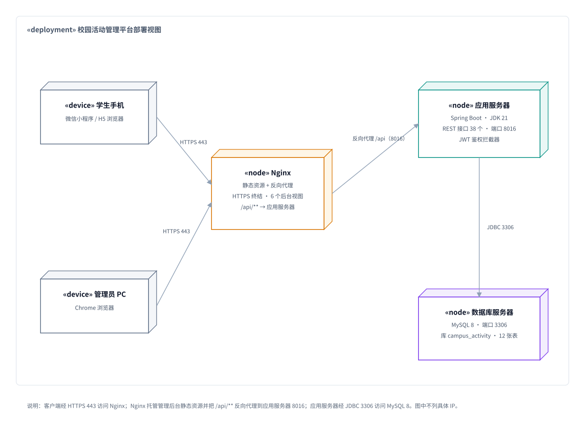
<svg xmlns="http://www.w3.org/2000/svg" width="1300" height="940" viewBox="0 0 1300 940" font-family="'PingFang SC','Hiragino Sans GB','Microsoft YaHei','Noto Sans CJK SC',sans-serif">
<defs>
<marker id="ar" viewBox="0 0 10 10" refX="9" refY="5" markerWidth="7.5"
markerHeight="7.5" orient="auto-start-reverse">
<path d="M0,0 L10,5 L0,10 Z" fill="#8FA0B5"/>
</marker>
<marker id="ar-open" viewBox="0 0 12 12" refX="11" refY="6" markerWidth="9"
markerHeight="9" orient="auto-start-reverse">
<path d="M1,1 L11,6 L1,11" fill="none" stroke="#8FA0B5" stroke-width="1.6"/>
</marker>
<marker id="ar-ink" viewBox="0 0 10 10" refX="9" refY="5" markerWidth="7.5"
markerHeight="7.5" orient="auto-start-reverse">
<path d="M0,0 L10,5 L0,10 Z" fill="#475569"/>
</marker>
</defs>
<rect x="36" y="36" width="1228" height="820" rx="8" ry="8" fill="none" stroke="#E3E8EF" stroke-width="1.4"/>
<text x="60" y="71.6" font-size="15.5" fill="#475569" text-anchor="start" font-weight="600">«deployment» 校园活动管理平台部署视图</text>
<path d="M90,200 L108,182 L348,182 L330,200 Z" fill="#F4F6F9" stroke="#64748B" stroke-width="1.4"/>
<path d="M330,200 L348,182 L348,302 L330,320 Z" fill="#F4F6F9" stroke="#64748B" stroke-width="1.4"/>
<rect x="90" y="200" width="240" height="120" fill="#FFFFFF" stroke="#64748B" stroke-width="1.7"/>
<text x="210" y="239.6" font-size="15.5" fill="#0F172A" text-anchor="middle" font-weight="600">«device» 学生手机</text>
<text x="210" y="268.5" font-size="12.5" fill="#475569" text-anchor="middle" font-weight="400">微信小程序 / H5 浏览器</text>
<path d="M90,620 L108,602 L348,602 L330,620 Z" fill="#F4F6F9" stroke="#64748B" stroke-width="1.4"/>
<path d="M330,620 L348,602 L348,722 L330,740 Z" fill="#F4F6F9" stroke="#64748B" stroke-width="1.4"/>
<rect x="90" y="620" width="240" height="120" fill="#FFFFFF" stroke="#64748B" stroke-width="1.7"/>
<text x="210" y="659.6" font-size="15.5" fill="#0F172A" text-anchor="middle" font-weight="600">«device» 管理员 PC</text>
<text x="210" y="688.5" font-size="12.5" fill="#475569" text-anchor="middle" font-weight="400">Chrome 浏览器</text>
<path d="M470,350 L488,332 L738,332 L720,350 Z" fill="#FEF6E7" stroke="#D97706" stroke-width="1.4"/>
<path d="M720,350 L738,332 L738,492 L720,510 Z" fill="#FEF6E7" stroke="#D97706" stroke-width="1.4"/>
<rect x="470" y="350" width="250" height="160" fill="#FFFFFF" stroke="#D97706" stroke-width="1.7"/>
<text x="595" y="389.6" font-size="15.5" fill="#0F172A" text-anchor="middle" font-weight="600">«node» Nginx</text>
<text x="595" y="416.5" font-size="12.5" fill="#475569" text-anchor="middle" font-weight="400">静态资源 + 反向代理</text>
<text x="595" y="440.5" font-size="12.5" fill="#475569" text-anchor="middle" font-weight="400">HTTPS 终结 · 6 个后台视图</text>
<text x="595" y="464.5" font-size="12.5" fill="#475569" text-anchor="middle" font-weight="400">/api/** → 应用服务器</text>
<path d="M930,200 L948,182 L1218,182 L1200,200 Z" fill="#E9F7F5" stroke="#0D9488" stroke-width="1.4"/>
<path d="M1200,200 L1218,182 L1218,332 L1200,350 Z" fill="#E9F7F5" stroke="#0D9488" stroke-width="1.4"/>
<rect x="930" y="200" width="270" height="150" fill="#FFFFFF" stroke="#0D9488" stroke-width="1.7"/>
<text x="1065" y="239.6" font-size="15.5" fill="#0F172A" text-anchor="middle" font-weight="600">«node» 应用服务器</text>
<text x="1065" y="266.5" font-size="12.5" fill="#475569" text-anchor="middle" font-weight="400">Spring Boot · JDK 21</text>
<text x="1065" y="290.5" font-size="12.5" fill="#475569" text-anchor="middle" font-weight="400">REST 接口 38 个 · 端口 8016</text>
<text x="1065" y="314.5" font-size="12.5" fill="#475569" text-anchor="middle" font-weight="400">JWT 鉴权拦截器</text>
<path d="M930,660 L948,642 L1218,642 L1200,660 Z" fill="#F3EEFD" stroke="#7C3AED" stroke-width="1.4"/>
<path d="M1200,660 L1218,642 L1218,782 L1200,800 Z" fill="#F3EEFD" stroke="#7C3AED" stroke-width="1.4"/>
<rect x="930" y="660" width="270" height="140" fill="#FFFFFF" stroke="#7C3AED" stroke-width="1.7"/>
<text x="1065" y="699.6" font-size="15.5" fill="#0F172A" text-anchor="middle" font-weight="600">«node» 数据库服务器</text>
<text x="1065" y="726.5" font-size="12.5" fill="#475569" text-anchor="middle" font-weight="400">MySQL 8 · 端口 3306</text>
<text x="1065" y="750.5" font-size="12.5" fill="#475569" text-anchor="middle" font-weight="400">库 campus_activity · 12 张表</text>
<path d="M348,260 L470,410" stroke="#8FA0B5" stroke-width="1.5" fill="none" marker-end="url(#ar)"/>
<text x="430" y="320.3" font-size="12" fill="#475569" text-anchor="middle" font-weight="400">HTTPS 443</text>
<path d="M348,680 L470,450" stroke="#8FA0B5" stroke-width="1.5" fill="none" marker-end="url(#ar)"/>
<text x="392" y="518.3" font-size="12" fill="#475569" text-anchor="middle" font-weight="400">HTTPS 443</text>
<path d="M738,430 L930,275" stroke="#8FA0B5" stroke-width="1.5" fill="none" marker-end="url(#ar)"/>
<text x="845" y="312.3" font-size="12" fill="#475569" text-anchor="middle" font-weight="400">反向代理 /api（8016）</text>
<path d="M1065,350 L1065,660" stroke="#8FA0B5" stroke-width="1.5" fill="none" marker-end="url(#ar)"/>
<text x="1082" y="509.3" font-size="12" fill="#475569" text-anchor="start" font-weight="400">JDBC 3306</text>
<text x="60" y="906.5" font-size="12.5" fill="#5A6779" text-anchor="start" font-weight="400">说明：客户端经 HTTPS 443 访问 Nginx；Nginx 托管管理后台静态资源并把 /api/** 反向代理到应用服务器 8016；应用服务器经 JDBC 3306 访问 MySQL 8。图中不列具体 IP。</text>
</svg>